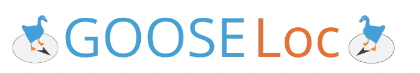
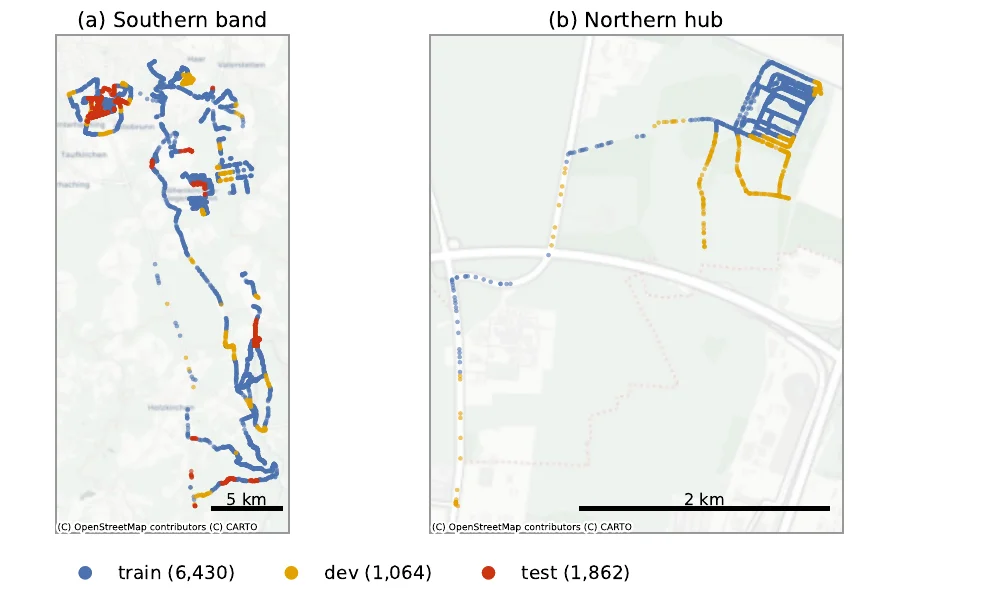
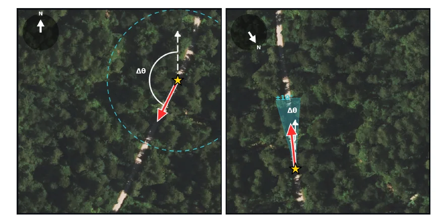
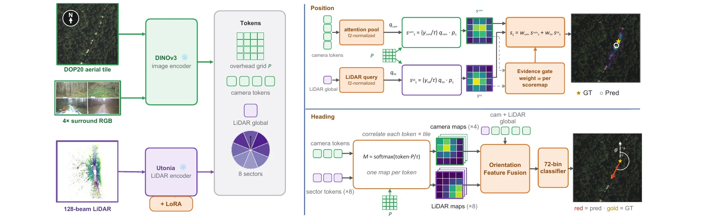
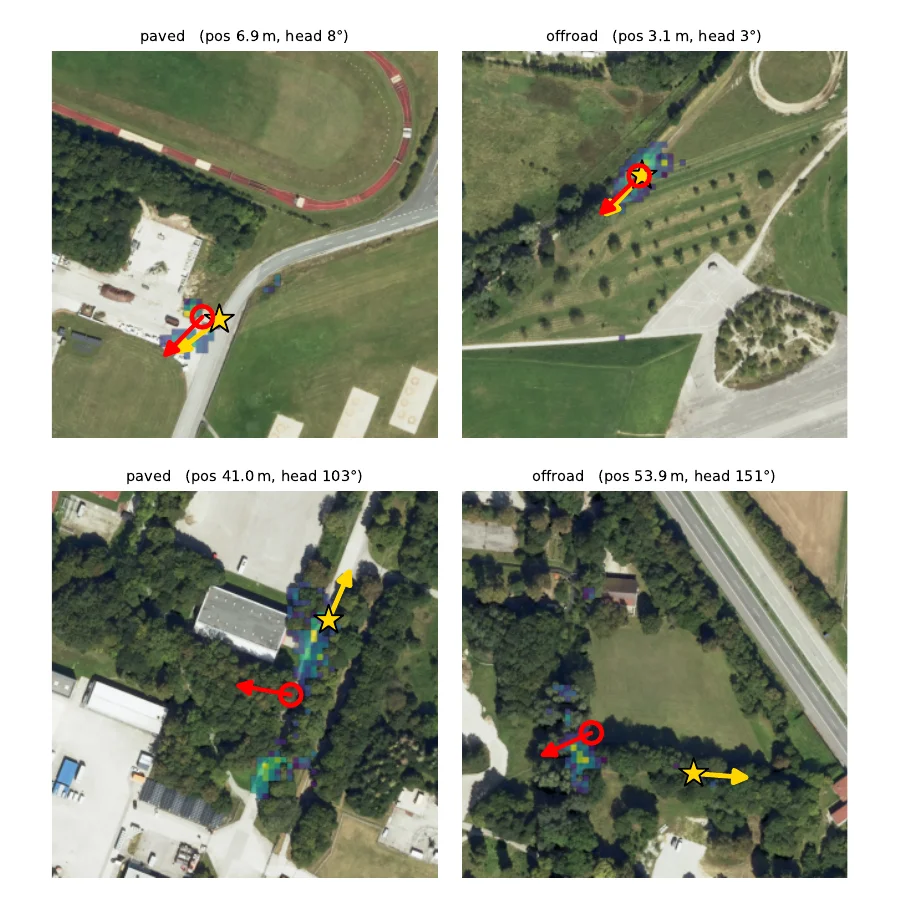

Cross-view pose estimation estimates a ground camera's geographic pose by matching onboard sensor data with geo-referenced overhead imagery. This is particularly relevant when GNSS is unreliable, for example under forest canopy or in urban canyons. Existing metric cross-view benchmarks, such as VIGOR and cross-view KITTI, are dominated by urban and road scenes with strong human-made structure without off-road terrain.
We introduce GOOSELoc, a multimodal benchmark for ground-to-aerial localization in unstructured environments, including forests, fields, and rural tracks. GOOSELoc comprises 9,356 scenes recorded across all four seasons around Munich, Germany, pairing geo-referenced aerial orthophotos with surround-view RGB imagery and 3D LiDAR point clouds. Paved/unpaved labels enable analyzing the impact of terrain structure, while the seasonal recordings allow studying the appearance gap to mostly summer-captured orthophotos.
To assess the transferability of existing methods, we adapt and fine-tune four state-of-the-art cross-view localization baselines on GOOSELoc. Despite task-specific fine-tuning, the performance degrades substantially in off-road environments. We therefore propose a multimodal baseline combining surround-view imagery and LiDAR geometry, improving localization performance and providing a stronger reference for future work.
GOOSELoc builds on the German Outdoor and Offroad Dataset (GOOSE) and covers a ~45 km × 16 km band of Upper Bavaria south of Munich. Each scene contains four time-synchronized RGB views (front, right, back, left) giving full 360° coverage, a single LiDAR sweep, and a 1024×1024 px crop (204.8 m × 204.8 m) of the Bavarian DOP20 orthophotos. Because the orthophotos are flown in summer independently of the ground drives, every ground-aerial pair carries a built-in temporal gap: vegetation state, snow cover and construction differ between views. The dataset is close to terrain-balanced (45.8% paved, 54.2% unpaved).

Train, dev and test are partitioned on a 1 km × 1 km grid so that they cover disjoint regions. A model can therefore not succeed by recognizing a location it has seen during training. The assignment balances split size (≈70/10/20), terrain class and season.
| Split | Winter | Spring | Summer | Autumn | Paved | Total |
|---|---|---|---|---|---|---|
| train | 1,387 | 1,976 | 1,341 | 1,726 | 2,988 | 6,430 |
| dev | 154 | 304 | 103 | 503 | 400 | 1,064 |
| test | 332 | 608 | 532 | 390 | 900 | 1,862 |
| Total | 1,873 | 2,888 | 1,976 | 2,619 | 4,288 | 9,356 |

North-up provides no heading prior: the model receives a north-aligned overhead tile and must recover the full 360° orientation. IMU ±10° mimics a coarse onboard heading estimate: the tile is pre-rotated to the vehicle heading with a random mismatch of up to ±10°, and the model predicts the residual.

Frozen DINOv3 (images and aerial tile) and Utonia (LiDAR, with LoRA) produce a shared token set. In the position branch each modality correlates its own query with the overhead patch features, and an evidence gate weights the resulting score maps before they are summed. The heading branch correlates camera tokens and LiDAR wedge tokens against the tile and feeds the match maps to a 72-bin heading classifier.
Mean and median error for position (m) and orientation (°) on dev and test, averaged over three seeds. Best per column within each setting in bold. Existing methods, even after fine-tuning, degrade substantially off-road. LiDAR is the stronger single modality for position, cameras resolve the front/back heading ambiguity, and the fusion combines both.
| dev | test | ||||||||
|---|---|---|---|---|---|---|---|---|---|
| Position (m) ↓ | Orientation (°) ↓ | Position (m) ↓ | Orientation (°) ↓ | ||||||
| Mean | Median | Mean | Median | Mean | Median | Mean | Median | ||
| North-up | |||||||||
| Predict center | 38.9 | 40.9 | 90.0 | 90.0 | 39.7 | 41.5 | 90.0 | 90.0 | |
| CCVPE (surround) | 33.6±0.4 | 25.7±1.3 | 37.2±8.5 | 16.7±12.2 | 45.4±2.9 | 37.0±2.9 | 52.8±5.0 | 35.6±17.0 | |
| HC-Net (surround) | 31.3±0.2 | 27.3±0.6 | 85.7±1.5 | 84.2±4.8 | 31.8±0.4 | 28.6±0.2 | 87.0±0.5 | 84.4±1.2 | |
| FG² (front) | 32.8±0.9 | 29.3±0.2 | 89.9±0.4 | 91.3±0.4 | 37.7±1.2 | 35.1±0.8 | 92.0±0.2 | 93.4±0.1 | |
| FG² (surround) | 30.4±0.2 | 28.0±0.3 | 89.7±0.1 | 90.4±0.1 | 34.4±0.4 | 32.1±0.3 | 92.5±0.1 | 93.1±0.3 | |
| Ours (RGB) | 25.9±0.1 | 21.8±0.2 | 30.2±4.0 | 11.5±0.9 | 29.8±0.1 | 25.5±0.1 | 49.0±5.3 | 27.9±3.3 | |
| Ours (LiDAR-only) | 23.9±0.4 | 19.8±0.4 | 58.3±4.0 | 16.5±2.0 | 28.7±0.3 | 24.9±0.8 | 64.3±3.6 | 38.5±5.4 | |
| Ours (RGB+L) | 23.1±0.3 | 18.8±0.2 | 26.2±1.0 | 10.2±0.4 | 27.1±0.3 | 22.2±0.6 | 46.3±1.1 | 24.8±0.3 | |
| IMU ±10° | |||||||||
| Shi et al. (front) | 32.4 | 22.7 | 3.3 | 2.5 | 35.4 | 26.6 | 4.1 | 3.2 | |
| HC-Net (surround) | 29.8±0.5 | 26.2±0.5 | 12.4±0.6 | 8.9±0.5 | 31.9±3.3 | 27.2±0.3 | 15.0±1.5 | 11.7±0.8 | |
| FG² (front) | 23.1±0.4 | 17.0±0.4 | 5.2±0.2 | 3.7±0.1 | 29.2±0.3 | 24.6±0.6 | 6.6±0.1 | 4.8±0.1 | |
| FG² (surround) | 19.8±0.2 | 14.5±0.3 | 4.3±0.1 | 3.6±0.1 | 25.0±0.4 | 20.2±0.6 | 5.1±0.1 | 4.4±0.2 | |
| Ours (RGB) | 21.1±0.0 | 16.3±0.1 | 3.8±0.1 | 3.0±0.1 | 25.1±0.1 | 20.7±0.2 | 4.6±0.1 | 3.9±0.1 | |
| Ours (LiDAR-only) | 16.9±0.2 | 11.3±0.2 | 3.4±0.0 | 2.6±0.1 | 21.2±0.2 | 16.1±0.1 | 4.2±0.1 | 3.5±0.1 | |
| Ours (RGB+L) | 16.2±0.2 | 10.5±0.3 | 3.7±0.1 | 2.8±0.0 | 19.5±0.3 | 14.1±0.1 | 4.6±0.1 | 3.8±0.1 | |

Test predictions (north-up, no prior). Gold star/arrow: ground truth, red circle/arrow: prediction, viridis overlay: predicted position posterior.
The dataset will be hosted by the library of the University of the Bundeswehr Munich and receive a persistent DOI. Download links, the data license and a loader for PyTorch will be published here and in the GitHub repository.
Orthophotos: © Bayerische Vermessungsverwaltung. Ground data derived from GOOSE.
@inproceedings{deuser2027gooseloc,
title = {{GOOSELoc}: A Multimodal Benchmark for Ground-to-Aerial Localization in Unstructured Off-Road Terrain},
author = {Deuser, Fabian and Mortimer, Peter and Kampa, Robin-Nico and B{\"o}{\ss}end{\"o}rfer, Anna and M{\"a}hlisch, Mirko and Werner, Martin and Oswald, Norbert},
booktitle = {Proceedings of the IEEE/CVF Winter Conference on Applications of Computer Vision (WACV)},
year = {2027}
}